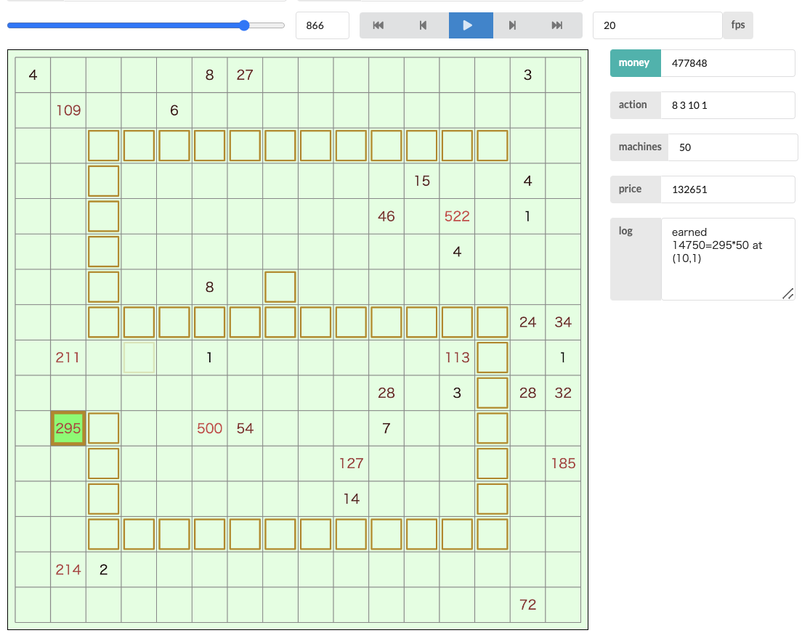

RECRUIT 日本橋ハーフマラソン 2021 ～増刊号～¶

問題概要¶
- N * N マスのフィールドがあり、特定の時間に価値 v の野菜が現れ、時間が立つと消える
- 野菜を収穫するには収穫機が必要で、価格は「(現在持っている台数+1)^3」円かかる
- T ターン中、「収穫機を買って設置する」か「収穫機を移動する」か選ぶ
- 設置位置や移動先には他の収穫機があってはいけない
- 各ターンの終了時点で、そのマスに野菜と収穫機がある場合収穫され、「野菜の価値 * その収穫機と 4 方向で連結している収穫機の数」円だけ得られる
- 最終的に得られるお金を最大化せよ
時間¶
168 時間
個人的メモ¶
- 盤面に合わせてうにゃうにゃとアメーバが動くような感じ
- 固定配置＋遊撃隊だと、盤面に合わないときにスコアが出せない(平均 5M 円超えは難しそう)
- 「連結性を維持して」は関節点(LowLink など)
- 関節点以外を動かせる
- (もしかして差分計算できる？)
- 野菜を収穫済みか？の保持の仕方
- https://twitter.com/C7C7LL/status/1436986015088996354
- 野菜は 5000 個だが、各マスの野菜の有無を状態に毎ターン更新すれば 16*16=256 個で済む(State が軽くなる)
- 各操作は int1 つで持てる
- マスの評価値(時間、空間)
- 時間方向
- 未来に出現/消滅する野菜に対して重み付け(先読み)
- ターン t でマス x に発生する野菜の価値 v について、t までのターン数で減衰させる
- 空間方向
- 現在出現している野菜との距離に対して重み付け
- 出現しているマス x の野菜の価値 v について、その距離で減衰させる(そこまで 0 点だったときの平均になる v/d 的な指数減衰など)
- 取得済みを除く、消滅までの期間で距離を制限、複数の収穫機が同じマスを目指して動いて無駄にならないような工夫も必要？
- 時間方向
- コーナーケース
- マスの評価関数+貪欲/ビームサーチ
- 基本連結を保って、マスの評価値が最小のマスから最大のマスに動くような貪欲、または、いくつかのパターンを試すビームサーチ
- (結構、同じアプローチも、評価関数の作り方や細かい実装などでスコアの差がでやすかった？)
- 焼きなましの可能性
- https://twitter.com/t33f/status/1437003245621157894
- https://qiita.com/kusano_k/items/eb44e796adf237ae35d6
- 回収する野菜の集合を焼き鈍す、移動先の焼きなます
解説¶
(50 位まで&発言を見つけられた方のみ)
- 1 位 Jirotech さん
- 4 位 phocom さん
- 7 位 fuppy0716 さん
- 8 位 siman さん
- 9 位 kawatea さん
- 10 位 bowwowforeach さん
- 12 位 fky_さん
- 14 位 assy さん
- 16 位 Shun_PI さん
- 17 位 nagiss さん
- 18 位 shibh308 さん
- 20 位 wanui さん
- 21 位 tsukammo さん
- 22 位 c7c7 さん
- 23 位 eivour さん
- 24 位 cuthbert さん
- 25 位 eijirou さん
- 27 位 hirokazu1020 さん
- 28 位 prd_xxx さん
- 29 位 yowa さん
- 30 位 nrvft さん
- 32 位 udon1206 さん
- 36 位 Kiri8128 さん
- 44 位 shim0 さん
- 47 位 yochan さん
- 48 位 komori3 さん
- 49 位 terry_u16 さん